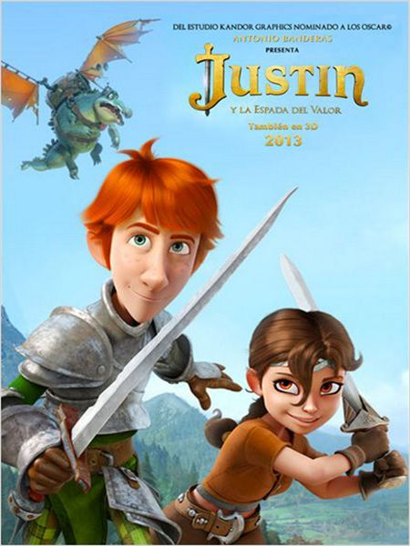

Justin e a Espada da Coragem. |
|
|  | Gênero. Animação |
| Sinopse. Justin sempre quis ser um cavaleiro, mas seu pai, conselheiro-chefe da Rainha, quer que o filho siga seus passos e se torne um advogado. Em busca de ajuda, o garoto procura a avó e descobre que seu avô, Sir Roland, foi o mais nobre cavaleiro do reino e protetor do Rei, até que ambos foram traídos e mortos pelo terrível Sir Heraclio. Contra o desejo de seu pai, Justin decide ir em busca de seu sonho e começa uma jornada para tornar-se cavaleiro. |
|
| Diretor. Manuel Sicilia. | |
| Elenco. Saoirse Ronan (Talia), Antonio Banderas (Sir Clorex), Mark Strong (Heraclio), Freddie Highmore (Justin), Alfred Molina (Reginald). |
|
| Dia de Lançamento. 29 de Novembro de 2013. |
|
| |
|
 
   |
|